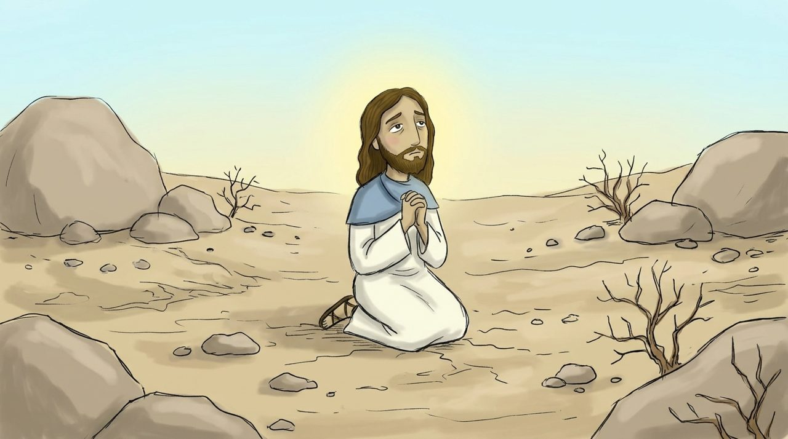
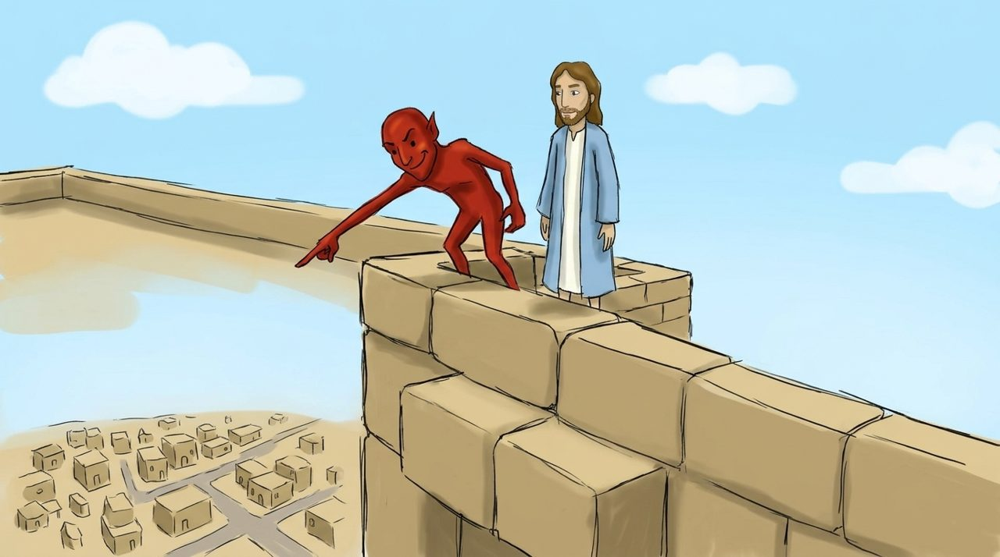
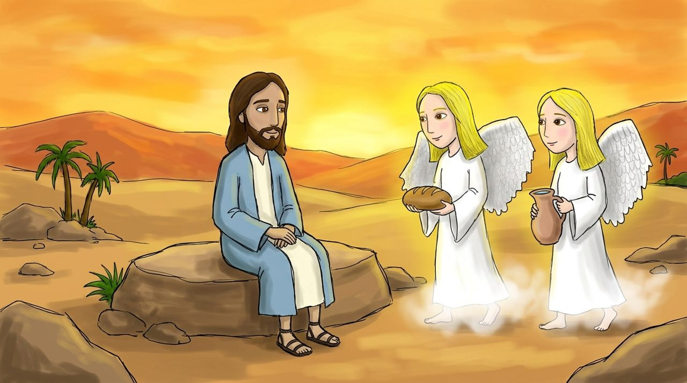

Səhnə 1 · Matta 4:1–2
Səhrada 40 gün
Vəftiz olunandan sonra Müqəddəs Ruh İsanı ya apardı.
İsa 40 gün heç nə yemədən tutdu və dua etdi. Sonra çox acdı.

Matta 4:1–11 · təxminən 40 dəqiqə
Sarı sözlərə toxun, mənası çıxacaq. 🔊 düyməsi Azərbaycan dilində oxuyur.

Vəftiz olunandan sonra Müqəddəs Ruh İsanı ya apardı.
İsa 40 gün heç nə yemədən tutdu və dua etdi. Sonra çox acdı.
Onda gəlib İsanı çəkdi: “Əgər Sən Allahın Oğlusansa, bu daşlara de ki, çörək olsun.”
İsa Müqəddəs Kitabdakı sözlə cavab verdi: “İnsan yalnız çörəklə deyil, Allahın ağzından çıxan hər la yaşayar.”

İblis İsanı in damına çıxarıb dedi: “Özünü aşağı at, mələklər Səni tutacaq.” İsa “Allahını sınama” sözü ilə qalib gəldi.
İblis uca dağdan dünyanın bütün padşahlıqlarını göstərib dedi: “Mənə səcdə etsən, bunların hamısını Sənə verərəm.” İsa dedi: “Rədd ol, Şeytan! Yalnız Allaha et.”

Sonda İblis İsadan əl çəkib getdi. İsa qalib gəldi!
Onda lər gəlib İsaya xidmət etdilər. Allahın Kəlamı sınağa qalib gəlmək üçün ən güclü qüvvədir.
“İnsan yalnız çörəklə deyil, Allahın hər Kəlamı ilə yaşayar.”
Matta 4:4 · uşaqlar üçün sadə dildə
İnsan yalnız lə deyil, Allahın hər ilə .
Boş yerlər üçün sözləri ardıcıl seç.
Səhrada İblisə “Yox!” deyən İsanı çək.
Ya Rəbb Allah, sınaqlara Kəlamla qalib gələn İsanı izzətləndirirəm. Pis iş görmək istəyəndə Sənin Kəlamını xatırlamağa kömək et. Cəsarətlə “yox” deməyə kömək et. İsa Məsihin adı ilə dua edirəm. Amin.